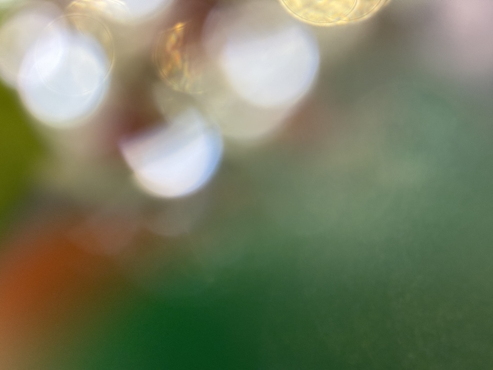

시즌 1 여름 감각 다이빙 · 이번 호의 감각 — 시각
하루 종일 무언가를 보고 있었는데,
정작 눈이 쉰 순간은 없었습니다.
모니터, 손안의 화면, 신호등, 또 화면. 눈은 쉬지 않고 움직였는데, 정작 눈이 쉬었던 순간은 없었습니다. 그래서 요즘 저는 스스로에게 이런 질문을 던집니다. 오늘, 초록을 본 적이 있는가. 거창한 질문이 아닙니다. 그저 오늘 하루, 초록빛 무언가에 시선이 잠시 머물렀는가를 묻는 것뿐입니다.
애쓰지 않아도 되는 색
초록은 이상한 색입니다. 화려하지 않은데 마음을 끕니다. 서두르지 않는데 눈이 자꾸 그리로 갑니다. 아마도 초록이 무언가를 증명하려 하지 않기 때문일 겁니다. 나무는 오늘 더 잘 보이려고 애쓰지 않습니다. 그저 거기, 어제와 같은 자리에 서 있을 뿐입니다. 그 무심함이 오히려 쉼이 됩니다.
어쩌면 우리는 오랫동안 무언가를 증명하며 살아왔는지도 모릅니다. 일에서, 관계에서, 심지어 쉬는 방식에서조차. 그래서 아무것도 증명하지 않는 존재 앞에 서면, 이상하게 마음이 놓입니다.
회복은 결심이 아니라, 스며드는 것
사람들은 종종 힐링을 찾아 멀리 떠납니다. 저는 그것이 조금 아쉽습니다. 회복이라는 건 대단한 결심 끝에 오는 것이 아니라, 오히려 일상의 틈 속에서 조용히 스며드는 것이라고 믿기 때문입니다.
바쁘다는 이유로 지나쳤던 것들은, 대개 사라진 게 아니라 그 자리에 그대로 있습니다. 우리가 잠시 눈을 돌리지 않았을 뿐이지요. 회사 앞 화단, 하천을 따라 심긴 나무들, 창밖 이웃집 화분 하나. 여름은 이 모든 초록이 가장 짙어지는 계절입니다. 어쩌면 일 년 중 지금이, 이 질문을 스스로에게 던지기에 가장 좋은 때인지도 모릅니다.
— 올리한나 드림

이번 호의 감각 처방 · 시각
오늘, 5분만 초록을 봅니다
출근길, 지도가 알려주는 가장 빠른 길 대신 나무가 있는 길로 한 블록 돌아가 보세요. 혹은 점심 후 벤치에 앉아, 나뭇잎이 흔들리는 걸 그저 바라보세요. 사진을 찍을 필요도, 기록할 필요도 없습니다. 본다는 행위, 그 자체로 충분합니다.
오늘, 초록을 본 적이 있나요?
그것으로, 충분합니다.